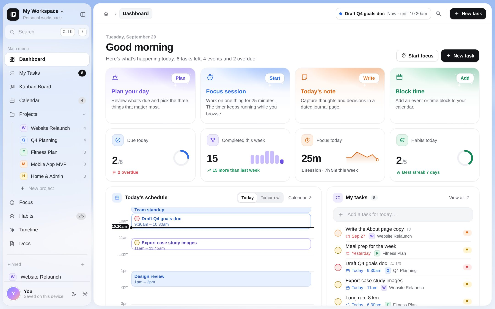

Type it like you'd say it
Dates, times, projects, labels, priority and repeats are picked up as you type. Press Enter and it's on your list.
Folio is a personal workspace for everything you juggle. Plan the day, block the time, focus on one thing and keep the notes, without ten tabs open. It opens instantly, works offline and keeps your data on your device.

Six tools that share one set of data, so a task can sit on your list, your calendar and your focus timer at the same time.
Dates, times, projects, labels, priority and repeats are picked up as you type. Press Enter and it's on your list.
Start a session from any task. The timer keeps running while you move around the app.
Drag to block time, move events and timed tasks around, and filter by calendar. Try the filters.
Tick today off in one tap. Tap one below.
A board for every project, with subtasks, due dates and priority on each card.
A block editor with headings, to-dos, tables, toggles, callouts and code. Type / for anything.
Glance at the dashboard in the morning, disappear into focus in the afternoon, close the loop in the evening.
The dashboard lines up what's due, what's scheduled and what slipped. Pick the three things that matter and start.
Start a focus session from any task. The next event sits quietly in the top bar, so nothing sneaks up on you.
Tick off habits, write today's note and let repeating tasks line up their next round on their own.
Every tool is a keystroke away. Press ? inside Folio to see them all.
Group work into projects and see it all on a timeline with today marked.
Daily, weekdays, weekly or monthly. The next one appears when you finish.
A dated journal page, one click away from the dashboard.
Tables, boards, galleries and calendars built from your own pages.
Meeting notes, weekly planner, roadmap, reading list, trip planner and more.
Sky, meadow, mist or dusk behind your workspace, six accents, light or dark.
Tasks, events, projects and pages, all from ⌘K.
Markdown in, Markdown and JSON out. Back up whenever you like.
Folio keeps everything in your browser's storage on this device. There's no account, no server and no tracking. Export a full backup any time from Settings.
Yes. It's a static web app with no account and no subscription. Open it and start using it.
In your browser's local storage on this device. Nothing is sent anywhere. Clearing your browser data removes it, so export a backup from Settings now and then.
Once the page has loaded, everything runs in your browser, so you can keep working without a connection.
Yes. The layout adapts to small screens: the sidebar tucks away, the calendar opens on a single day and the dashboard stacks into two columns.
Import Markdown files as pages, export any page as Markdown, and export the whole workspace as a JSON backup that you can import again later.
Open Folio and your workspace is ready, with sample projects to poke at.
Open Folio